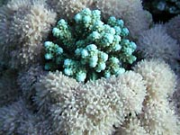

Swimming with mask
With a simple mask you can enjoy so beautiful underwater world.
These photos were taken in Sharm El Sheikh by cameras Fuji F31 , Nikon cp880. Now I use an underwater camera Canon D10, but new photos are not shown here yet.

Corals of Red Sea


white coral")